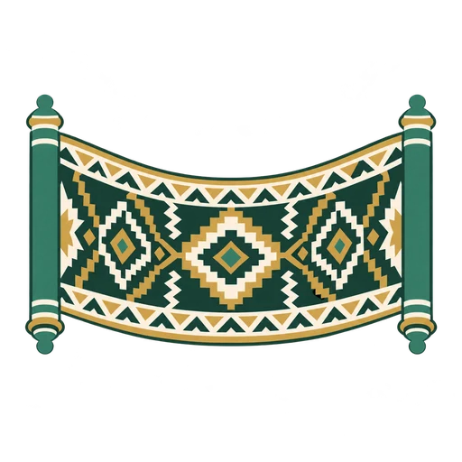
序PROLOGUE展开一卷锦
九幅纹样相接，织成一卷锦色。展卷，细看经纬间的形与序。
点击卷轴，展开或收卷
壹REGION
走进西双版纳与普洱，再到德宏，探访织锦村寨与传习日常。
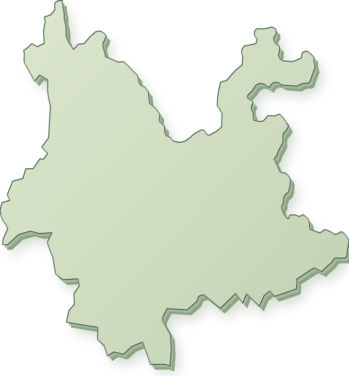
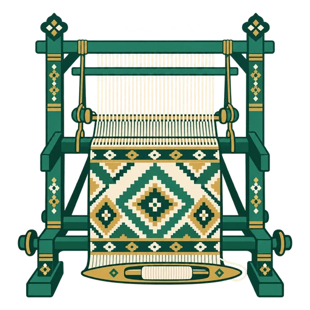
贰CRAFT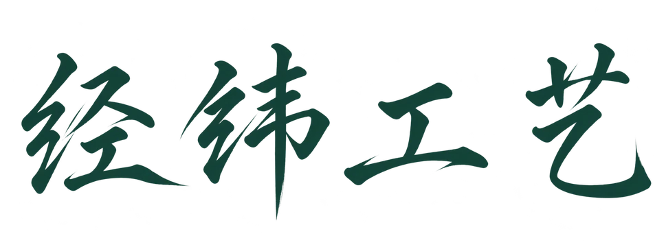
从备线染线，到定样制版，再到上机织作，纹样在经纬间逐渐成形。
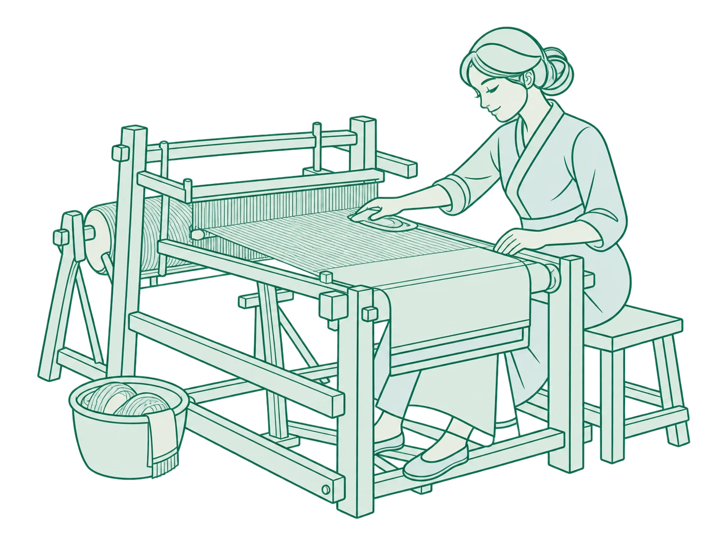
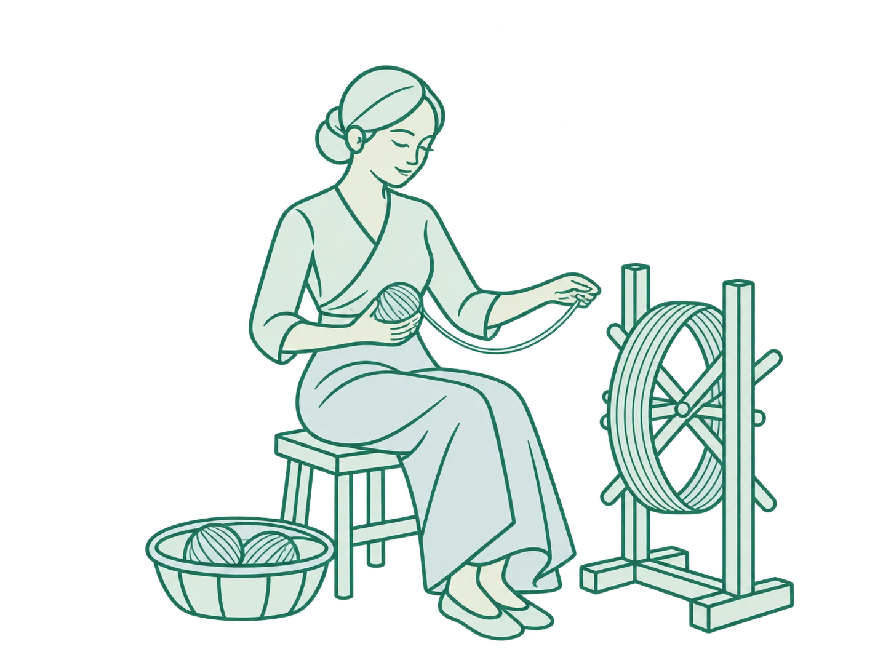
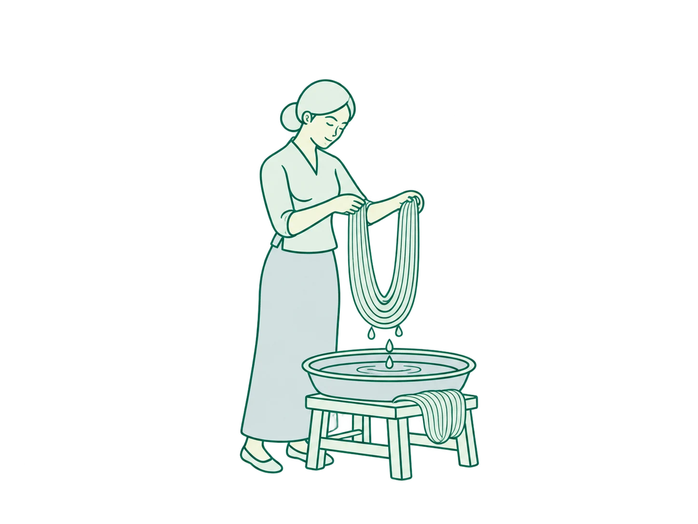
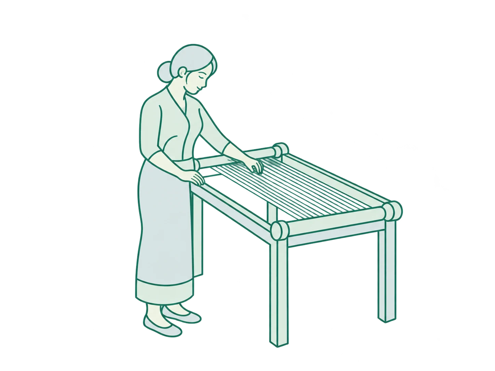
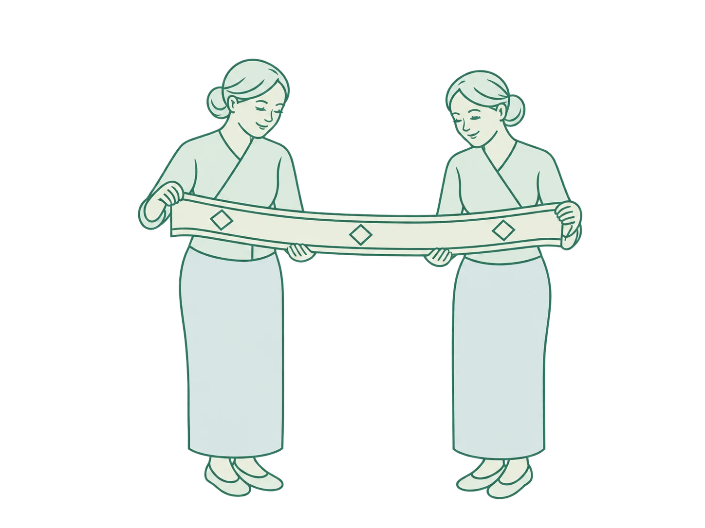
经纬原理 PRINCIPLE
一经一纬，交织成锦
经线纵向展布，纬线横向穿行。切换观看两组线的交织，拖动进度，让一行行纬线织入锦面。
叁ARCHIVE
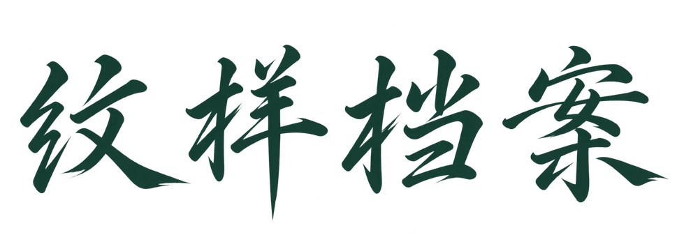
从几何与草木，到动物形态和建筑文字，循着形与色阅读锦面。
没有找到匹配的纹样，可换一个关键词或重置筛选。
档案纹样原色铺陈
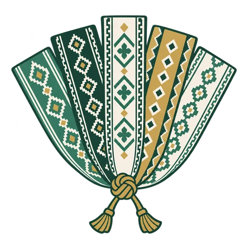
肆RELATIONS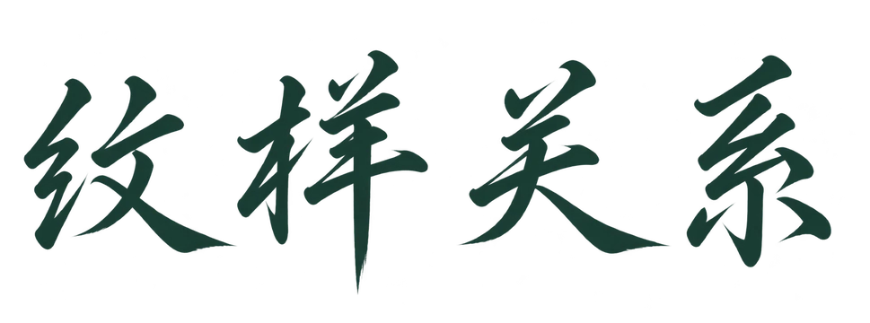
从纹样类别看主色构成，从色彩共现读锦面层次，探索傣锦纹样之间的联系。
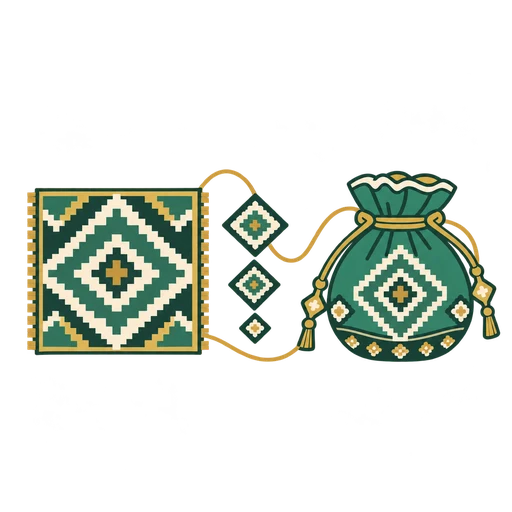
伍TRANSLATE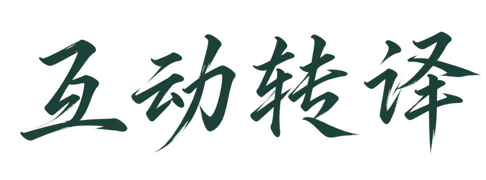
从搭配方案开始，或自由选锦配花。调整构图与配色，设计自己的方巾或书签，也可以织成长卷。
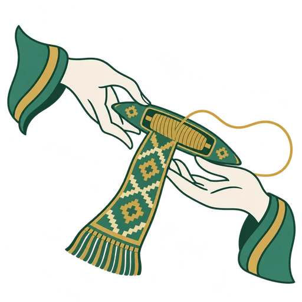
陆PEOPLE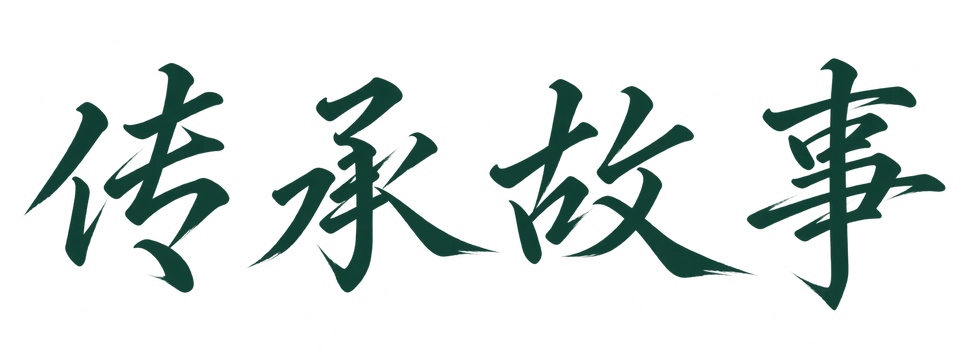
从祖辈与母亲的教习，到师徒相授与村寨传习，一门手艺在人与人之间延续。
传承足迹 TIMELINE